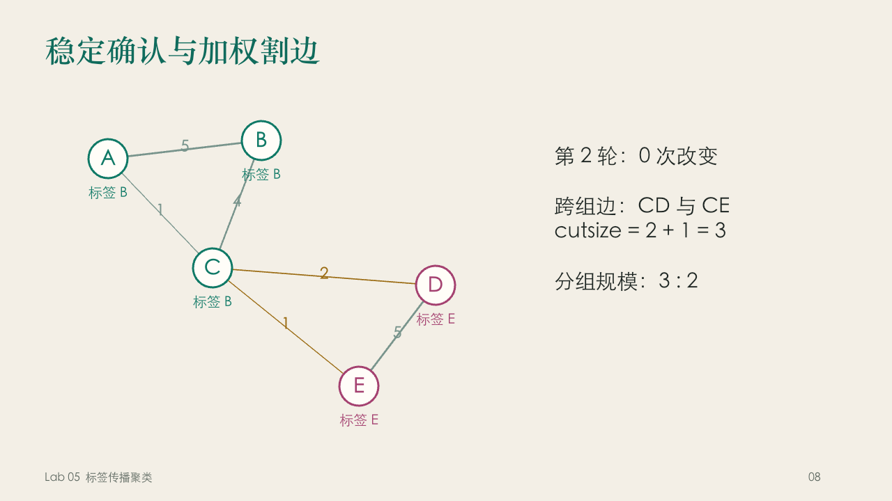

CLUSTERING / LAB 05 / LABEL PROPAGATION
邻居的颜色
一条局部规则，
如何长出群体的形状。
先看一段中文动画，再亲手改变图上的连接。标签传播，从看懂每一票开始。
每一条线都有分量，每一次更新都可解释。
01 / 一起看见
先相遇，再理解
原创动画 · 中文文字 · 氛围配乐 · 无配音
字幕已呈现在画面中，也提供独立 VTT。配乐可通过播放器静音。
02 / 带回课堂
可以讲，也可以继续改
16 页可编辑课件，附演讲备注与来源。

打开全屏课件预览 ↗一个例子，贯穿整场讲解
从加权投票讲到确认轮，再用双节点振荡说明同步与异步。最后回到 EDA 的用途和局限。
建议：先播放短片，再选第 4–11 页讲例子，最后让同学动手。课堂时间可自行调整。
03 / 把规则说清楚
一轮，就是每个节点
都访问一次。
先记住：节点名字不变，变化的是它携带的标签。
- 每个节点，以自己的名字为初始标签。
A 带 A，B 带 B。孤立节点没有邻居，保留原标签。
- 按标签，把邻居的边权相加。
同标签的两条边 1 和 4，需要合成 5 票。
- 选择最大票数的标签。
课堂默认平票取字典序最小。异步模式立即写回，同步模式整轮后统一写回。
- 再看一整轮，是否真的没有变化。
零变化才确认稳定。重复状态报告振荡，达到上限报告未确认收敛。
04 / 轮到你了
标签接力实验室
每个动画状态来自实际计算，不是固定答案。
节点恰好各出现一次，用空格或逗号分隔。修改配置后需应用，当前运行的规则见下方。
圆中是节点名，圆下是当前标签。点选节点可以查看它此刻读到的票数。
仅用于教师图。0 表示删除该边。修改即重置实验，数值 2 是原始样例。
查看真实的逐节点记录
| 轮 | 节点 | 旧标签 | 投票结果 | 新标签 | 写回时刻 |
|---|
试一张自己的图
最多 30 个节点、200 条无向边，权重为正。不支持自环或重边。只在此浏览器中计算。
05 / 验证理解
知道答案，也知道理由
可以反复尝试。答案后面，保留推理过程。
想自己实现一次？
独立 Python 参考实现与浏览器引擎交叉验证。包含异步、同步、平票、孤点、振荡检测和割边统计。
python3 label_propagation.py golden.json
python3 label_propagation.py golden.json --mode sync06 / 回到问题本身
标签依赖连接，
连接也需要解释。
标签传播可以提供粗化或初始群体的线索。实际电路划分还需要处理规模、时序与物理约束。生活中的类比只解释图结构，不能据此判断个人本质或推出因果。
本次改进保留老师的五节点图，补上中文动画、逐节点票数、同步振荡反例、可改参数的实验和带解析的习题。
资料与复现